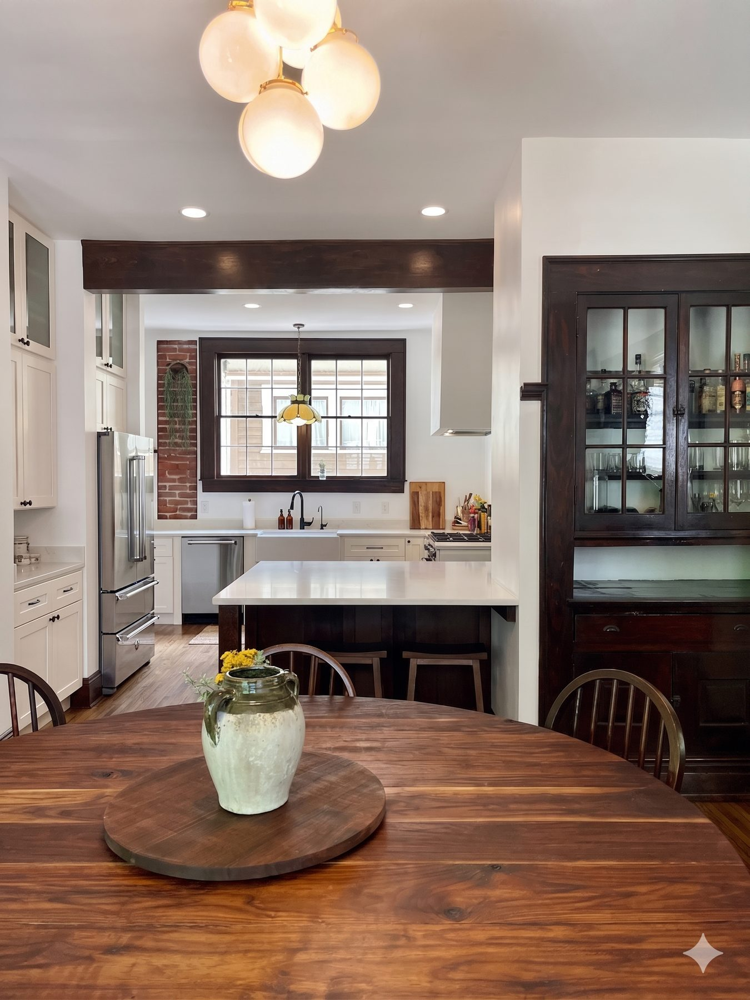
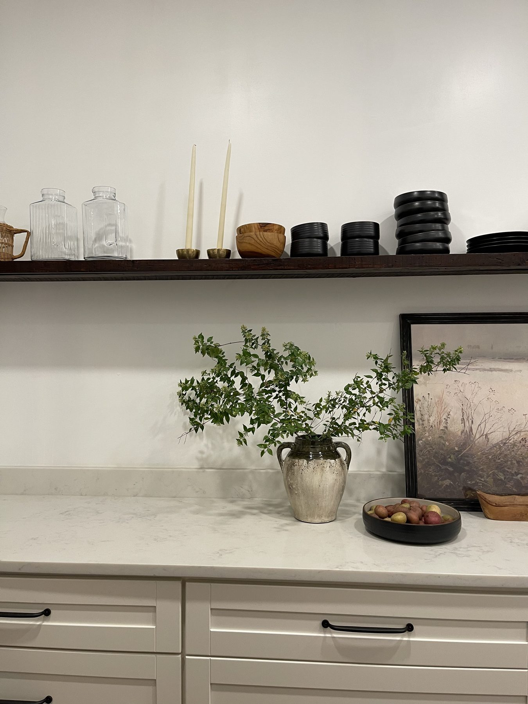
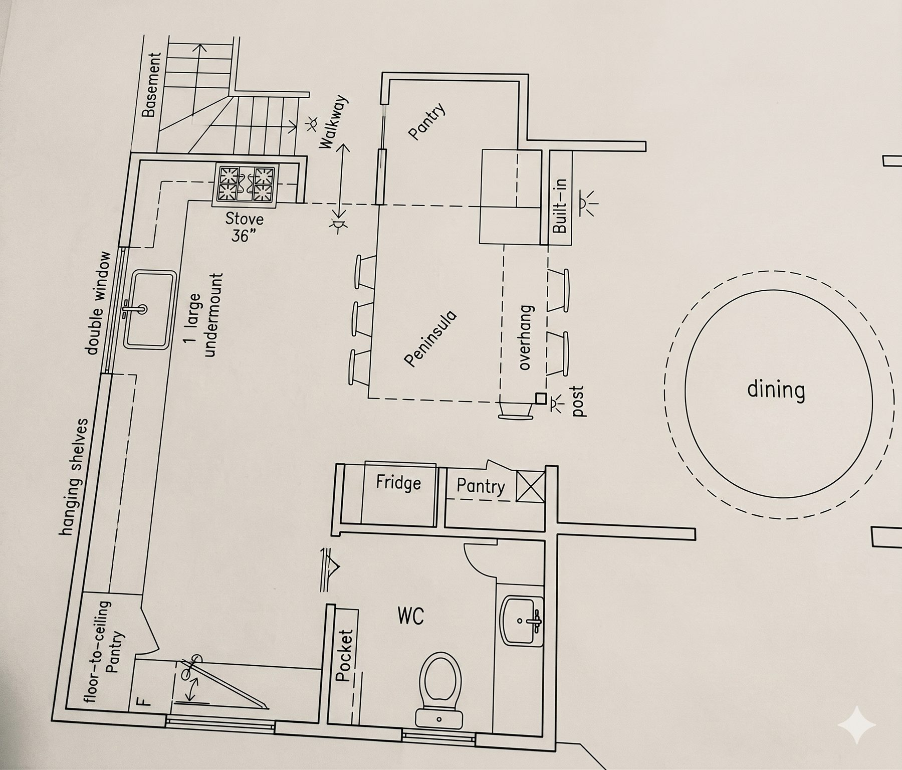
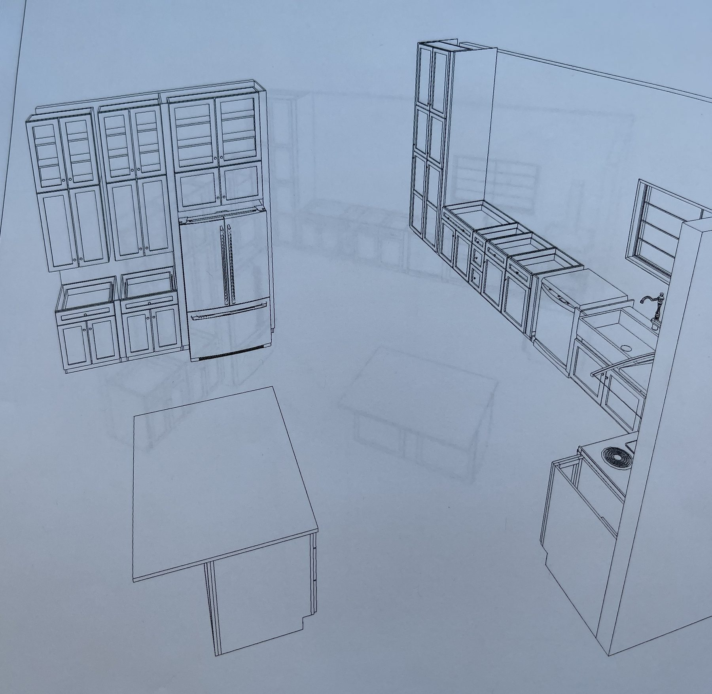
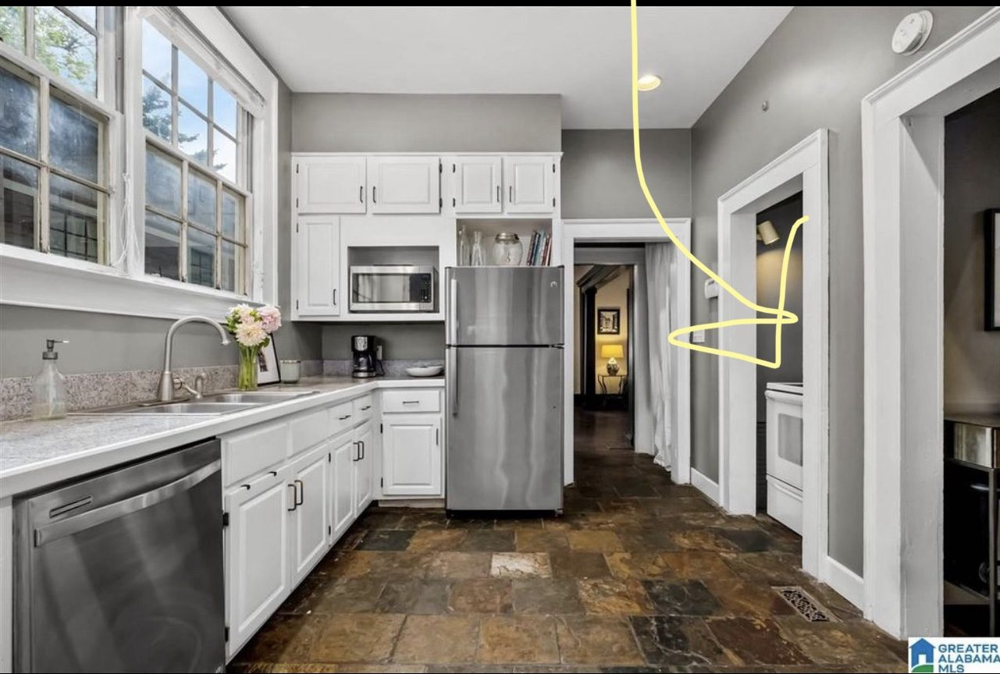
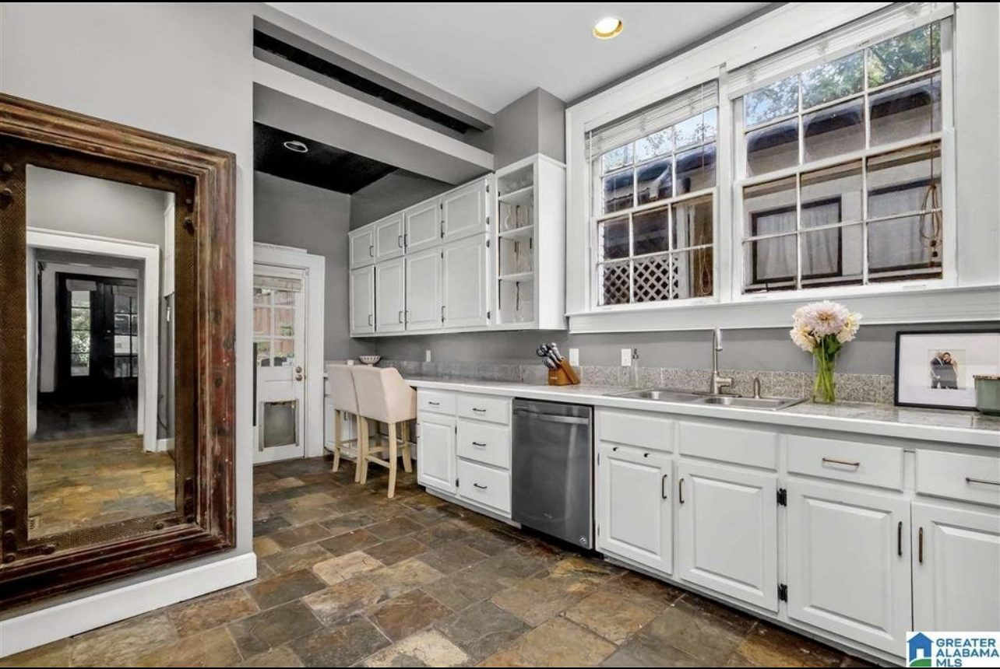

Case Study · Birmingham, AL · 2022
A craftsman kitchen, rebuilt from the floor joists up.
We honored the home's architectural language while creating an open kitchen and dining layout made for the ultimate entertainer's space.
- Scope
- Full kitchen gut · layout · finishes
- Role
- Design lead · floor-plan studies · cabinetry direction
- Status
- Completed, 2022
 After
After
After
Light, airy, and historically cohesive.
 After
After

AfterThe Move
The single biggest decision was leaning into the home's existing language instead of fighting it.
We stripped back years of layered white paint over trim and doors to reveal the original dark wood beneath, uncovered a brick chimney, and leveled ceiling heights so the focus was on the quality of the materials.
The end result was a space that felt light, airy and functional while also reading as historically cohesive.

AfterConcept
Three layouts on paper before anything came down.
The plan that won moved the fridge wall, found a real prep counter, and let the dining room read as one space with the kitchen.

Concept
ConceptBefore
Good bones, and a stove inside a closet.

Before
BeforeUneven flooring from layers of tile and old laminate, a cramped layout starring a stove inside a closet that vented into the basement, and a refrigerator stranded against a wall it didn't belong on.
What was specified
The document the cabinet maker built from.
- Cabinetry — inset Shaker, warm white, satin finish
- Counters — quartz, 3cm, eased edge, full-height backsplash
- Hardware — matte black pulls, glass knobs on the original doors
- Trim and doors — stripped to the original wood, oiled not painted
- Floors — existing oak, refinished natural, ceilings leveled
- Lighting — antique tiffany pendant over the sink, recessed elsewhere
Work With Me
Starting a remodel? Let's talk early.
The best decisions happen before the first hammer swings — before tile is ordered, before walls are framed, before a single trade is on site.
Book an Initial Consultation$150
Credited in full toward whatever you book next
- 30-minute video call
- Honest read on scope and budget range
Next project
A lake house with good bones